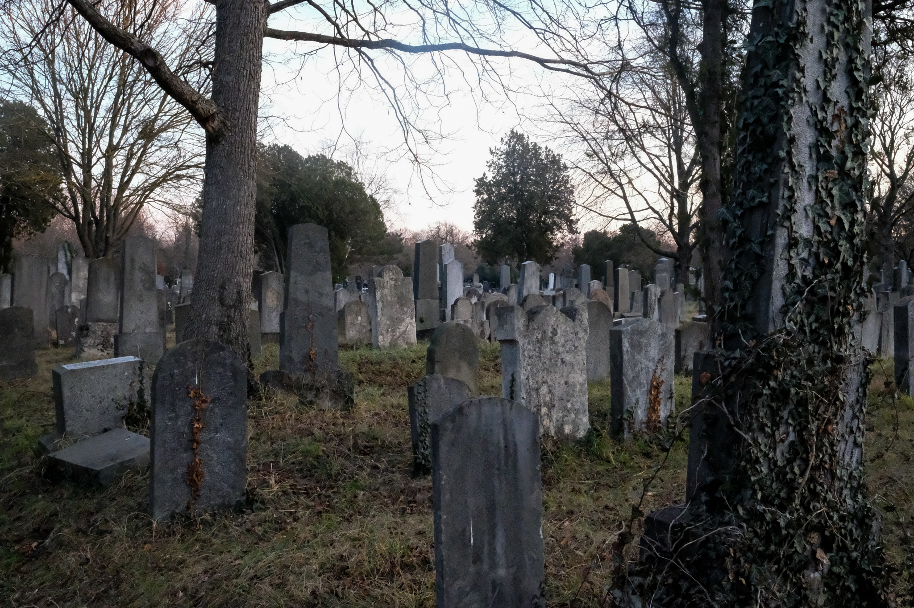
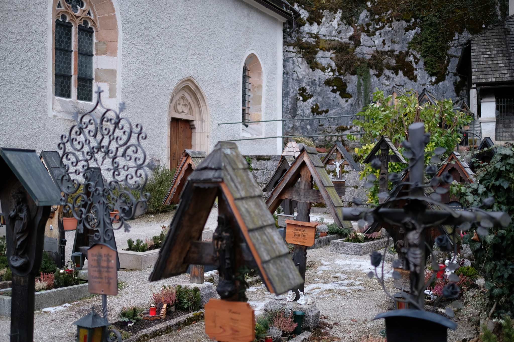

Visualizations


Photo Gallery


Vienna, February 2025
Videos
Chicago the Rattiest City
Chicago's Accessible Pedestrian Signals
Vienna, February 2025
Chicago the Rattiest City
Chicago's Accessible Pedestrian Signals